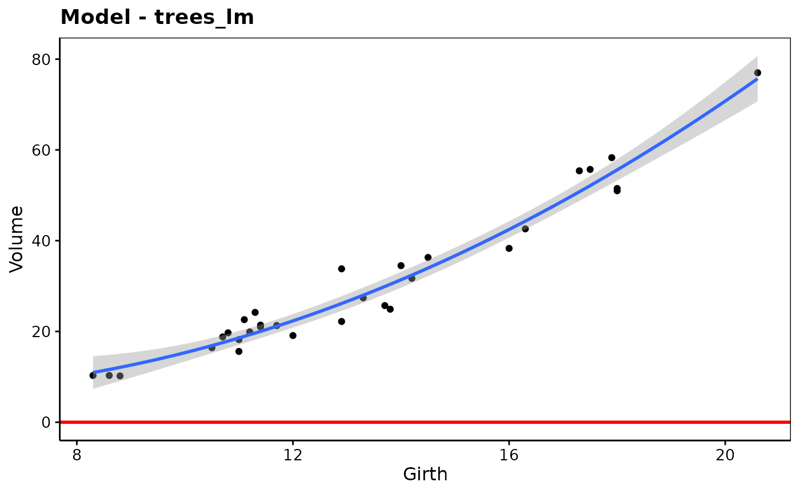

add_predictions() and add_residuals() are pipe-friendly
functions to add predictions or residuals to a data frame.
geom_ref_line() adds a vertical of horizontal reference line. rmse()
(the root-mean-squared-error), [mae[]] (the mean absolute error), qae()
(the quantiles of absolute error) and rsquare() (the variance of the
predictions divided by the variance of the response) are useful model
metrics.
add_predictions(data, model, var = "pred", type = NULL)
add_residuals(data, model, var = "resid")
geom_ref_line(h, v, color = "red", colour = color, size = 1)
rmse(model, data)
mae(model, data)
qae(model, data, probs = c(0.05, 0.25, 0.5, 0.75, 0.95))
rsquare(model, data)Arguments
- data
A data frame
- model
A model that has a
predict()method.- var
A string with the name of the predictions or residuals variable (by default, it is
"pred"and"resid"respectively)- type
If the model's
predict()method has atype=argument, you can give it here.- h
Position of the horizontal reference line
- v
Position of the vertical reference line
- color
The color of the reference line
- colour
Same as above (use the one you prefer)
- size
The width of the reference line
- probs
A numeric vector of probabilities
Value
A function with argument x that returns the values predicted by the
model for these values of x.
Examples
data(trees, package = "datasets")
trees_lm <- lm(Volume ~ Girth + I(Girth^2), data = trees)
rmse(trees_lm, trees)
#> [1] 3.169319
rsquare(trees_lm, trees)
#> [1] 0.9615866
mae(trees_lm, trees)
#> [1] 2.608712
qae(trees_lm, trees, probs = c(0, 0.25, 0.5, 0.75, 1)) # Resids five numbers
#> 0% 25% 50% 75% 100%
#> 0.1481196 1.1210224 2.3332344 4.0265937 7.6447381
add_predictions(trees, trees_lm)
#> Girth Height Volume pred
#> 1 8.3 70 10.3 10.95660
#> 2 8.6 65 10.3 11.61946
#> 3 8.8 63 10.2 12.08683
#> 4 10.5 72 16.4 16.88157
#> 5 10.7 81 18.8 17.54238
#> 6 10.8 83 19.7 17.88042
#> 7 11.0 66 15.6 18.57178
#> 8 11.0 75 18.2 18.57178
#> 9 11.1 80 22.6 18.92509
#> 10 11.2 75 19.9 19.28349
#> 11 11.3 79 24.2 19.64699
#> 12 11.4 76 21.0 20.01558
#> 13 11.4 76 21.4 20.01558
#> 14 11.7 69 21.3 21.15188
#> 15 12.0 75 19.1 22.33400
#> 16 12.9 74 22.2 26.15526
#> 17 12.9 85 33.8 26.15526
#> 18 13.3 86 27.4 27.98596
#> 19 13.7 71 25.7 29.89811
#> 20 13.8 64 24.9 30.38887
#> 21 14.0 78 34.5 31.38568
#> 22 14.2 80 31.7 32.40284
#> 23 14.5 74 36.3 33.96677
#> 24 16.0 72 38.3 42.47365
#> 25 16.3 77 42.6 44.31248
#> 26 17.3 81 55.4 50.77280
#> 27 17.5 82 55.7 52.12595
#> 28 17.9 80 58.3 54.89335
#> 29 18.0 80 51.5 55.59793
#> 30 18.0 80 51.0 55.59793
#> 31 20.6 87 77.0 75.70375
add_residuals(trees, trees_lm)
#> Girth Height Volume resid
#> 1 8.3 70 10.3 -0.6566002
#> 2 8.6 65 10.3 -1.3194638
#> 3 8.8 63 10.2 -1.8868266
#> 4 10.5 72 16.4 -0.4815670
#> 5 10.7 81 18.8 1.2576216
#> 6 10.8 83 19.7 1.8195798
#> 7 11.0 66 15.6 -2.9717761
#> 8 11.0 75 18.2 -0.3717761
#> 9 11.1 80 22.6 3.6749098
#> 10 11.2 75 19.9 0.6165050
#> 11 11.3 79 24.2 4.5530094
#> 12 11.4 76 21.0 0.9844231
#> 13 11.4 76 21.4 1.3844231
#> 14 11.7 69 21.3 0.1481196
#> 15 12.0 75 19.1 -3.2340006
#> 16 12.9 74 22.2 -3.9552619
#> 17 12.9 85 33.8 7.6447381
#> 18 13.3 86 27.4 -0.5859598
#> 19 13.7 71 25.7 -4.1981097
#> 20 13.8 64 24.9 -5.4888741
#> 21 14.0 78 34.5 3.1143250
#> 22 14.2 80 31.7 -0.7028390
#> 23 14.5 74 36.3 2.3332344
#> 24 16.0 72 38.3 -4.1736500
#> 25 16.3 77 42.6 -1.7124772
#> 26 17.3 81 55.4 4.6272001
#> 27 17.5 82 55.7 3.5740465
#> 28 17.9 80 58.3 3.4066504
#> 29 18.0 80 51.5 -4.0979255
#> 30 18.0 80 51.0 -4.5979255
#> 31 20.6 87 77.0 1.2962470
library(chart)
chart(trees_lm) +
geom_ref_line(h = 0) # Not particularly useful here, just an example
